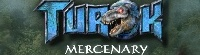

Turok Mercenary was a mod for the
poorly received Solder: Secret Wars. Due to either the poor reviews of
Soldner or the lack of a free animation import system, Turok: Mercenary
has been canceled.
Main Site
Risen is the
official collection of JRP's online comics. Initially, a single epic
techno-thriller, Risen is now mostly a collection of fan art and filler
comics, many starring the five strong Risen Fansbase.
Main Site
Concept
Art
j
Dark Cry" is the
modification to bring Perfect Dark gaming to the PC. Initially planned
for Far Cry, the possibility of porting it over to Half-Life 2 is being
pursued.
Main Site

Risen 2012 is a mod based on the as
yet nonexistent webcomic of a similar name. Command one of five warring
factions in this military strategy. This mod is for Warhammer 40k: Dawn
of War, or some other RTS.
Main
Site
|
07/13/05
Link relinked
Concept
Art link now redirects to the Risen 2012 screenshot page.
03/10/05
Dark Cry on the
move again
Check
out the new revamped Dark Cry site!
12/24/04
Almost made it a
year without updating
So
close! Anyway, I put in some descriptions in the link area. Plus you
can see I am preparing to add on the Risen 2012 portion of my website.
Stay faithful, brothers!
01/10/04
Yet another domain
switch!
Being
a transfer student at the tech savvy UW-Whitewater I get 50MB of
webspace, which is the least I can expect since they took away my rooms
that you can actually lay down in width-wise, decent tasting tap water,
and co-ed floors. But at least we no longer have that huge banner on
the side anymore, which really made things bad-looking. Like-wise I
have consolidated my Turok: Merc and Dark Cry sites and brought them
here as well. Risen remains at Keenspace because of that labor-saving
autokeen feature.
01/02/04
Dark Cry" is here!
The
Dark Cry" site is finally up in its skeleton form! Ok, I guess I should
explain that the purpose of the Dark Cry project is to expand the
lifetime of classic Perfect Dark gaming by bringing the maps onto the
PC utilizing the power of Far Cry's Sandbox editor. In addition to the
Perfect Dark maps I'll probably make some Goldeneye or similarly themed
maps like the Piz Gloria or the complete Area 51 to take advantage of
Far Cry's larger player capacity and specialty in outdoor maps. If all
goes well there I may make the project into a complete conversion mod
with gametypes, bots, and weapons. But let's got get ahead of
ourselves. Refurbished links are on the left.
10/26/03
After only 7 months
Risen
is now online! Check it out here.
09/24/03
Oh my god! Oh my
god! The casket is on fire!
Aaaaaah!
I just put up 6 new concept arts! Holy Moses! Go! Look!
08/15/03
Yes, I'm still
alive
I'm
just putting most effort into the Turok mod lately. Sorry all you web
comic fans out there!
06/13/03
More goodies
It
took some time, but I have now updated the Battlefield and Characters
section of the Turok web site with pictures and descriptions.
06/03/03
Turok, the web page
Today
I have given the Turok mod it's own web page (even though you can still
access all the pages here) but have a look, but keep some bandages
nearby should your eyes bleed.
05/26/03
Concept Art not
taken off life support yet
Color
studies of Rulf and Becki and the unnamed city now in the concept art
section. Enjoy!
05/21/03
Concept Art still
surviving
This
time we added Sid Nightwolf as our latest entry to the concept art
section. We're not dead yet! HmmmmmHHHHmmm!
05/01/03
More "Ah-has"
Ah,
now we know why no one visited my web site after Kublacon. Those SAA
people finally came out with the finalized version of the comic book
and
by golly my idea for the advertising section never made it into
fuition,
no doubt because of my badmouthing their showing at Kublacon. But oh
well, like I said JR Productions lives on with the Turok mod. I'll be
working on that more once this school year is finished and I'm moved
back home next week. (kinda makes up for the rediculously early Spring
Break). Now I must go play boffer CTF with the potential love of my
college life. Ta ta!
04/22/03
Turok Mod Update
Now
we bring you this very special update. A navigation bar!
04/13/03
Well, there you
have it
Well,
the people have spoken, in a manner of speaking, by not speaking at
all! The lack of local hits to my web site, the lack of a SAA meeting
from even taking place this week, and the lack of days between now and
my deadline, means this thing is kaput! I know not why, but the numbers
do not lie! Thus, I am closening up shop for this web comic. Like many
projects before it, it too can now travel down the endless river to
foggy oblivion. But weep not for the future, love. The web comic may be
lost, but the spirit of JR Productions lives on! As long as there is a
project to be done, like the Turok
mod for the upcoming PC game Soldner. Adieu! Adieu! Adieu!
04/07/03
Aha, I am
vindicated!
My
concern over my Kublacon, SAA, comic book, advertising thing has been
well justified. No one has visited the page since then save a couple
from the IGN boards who have no relevance to this matter. But what
hurts
even more is that my co-club memebers haven't shed a glance at it. No
appreciation for the new guy trying to prove himself. *sniff* Not even
giving him a chance *sob* But fear not for me, so long as I stick to
the
philosophy of having low expectations of people, then I'll rarely be
shocked and disappointed at instances such as this. But if this trend
continues until, say, next Sunday, then I'll scrap this project for
real
since it won't be worth the effort of squeezing it in between my job
and
summer courses if no one cares. Let the countdown begin!
04/05/03
Kublacon report
Want
to cure what ails you, insomniacs? Then hop over through the cold to
Kublacon, the biggect scifi/fantasy convention this side of the Rock
River and this side of Turtle Creek. Okay, maybe it was deader than Bin
Laden taking a midnight stroll through Hell's Kitchen but still. I
shouldn't be suprised as much as sobered like I usually am at the
goings
ons at Beloit College. Before I go off on a rant about that, let's
focus
on our club's showing at the event. I had to go there there twice
before
I finally saw the SAA's setup. It was sad. A foldout table put into a
dark corner with no one, not even our fearless leader nearby to spout
out the glories of our comic book. If one could even tell that's what
it
was about. All I could see on the table was a smattering of catgirl
drawings, the book that was the culmination of our efforts nowhere in
sight. I fear for the livelyhood of our club, our comic book, and my
own
web site after this. I don't say these things to hurt, I say them out
of
concern. Why I even made a costume as a promotional gimmick for my
comic, but all my effort was wasted and I will die in vain! Click on
the
pic to get a bigger picture.

04/03/03
Fire Bush!
Brief
political editorial or lewd comment on females with diverted melanin?
You decide! Anyway I hope the two people that have visited this page so
far enjoyed my April Fool’s article. Hardeehar! *cries inside*
Not here
not now. C'mon mate. Not here not now. Ok, back to business. I have
successfully gained brownie points with our fearless leader of the SAA
(who incedentally also heads the George W. Bush Fan Club) by suggesting
we reserve space in our yearly magazine for advertisements to the
artist’s own personal web pages. The idea was unexpectedly well
received, considering it having been designed purely to promote my own
self-interests. But as a wise man once said “Do not question the
fountain that springs forth good fortune, for you’ll jinx it or
something.”
Get
thineself ready Kublacon! For my lack of charisma shall surely bring
about certain doom and suck all the fun out of the room!
04/01/03
Crack of Doom
–
Uncut
Very bad news. I just got a
new girlfriend but she’s very controlling. I’ll no longer
be able to
continue my work on this web comic, for now my days will be filled with
going shoe shopping with her and telling her her butt doesn’t
look fat
in that. And my nights will be with inundated with me giving her
jewelry
in hopes to calm that headache she always seems to get, though it never
seems to work. 0_o
Nonetheless, if you want to
check out some concept art I had going for this project, click on this
page.
03/27/03
A DAY LONG REMEMBERED
160,0,80. On the verge of it’s
8½
anniversary, the company that brought you the films “The Mega
Couses”
and “Attack of the Killer Snowman”, the
Metalwalker comics series among others, the Now News 24 hour cable news
network, the rusty copper selling album “Love Don’t Fail Me
Now”, the
scifi novel “Eunos Ex Machina”, the Royal Intelligence
Service, and
“The
Great Shadow of Oblivion” religious cult and in partenership with
Graham
Enterprises the Graham Enterprises Picnic. …and that
wasn’t a complete
sentence was it?
Anyway, the “company” that brought you
all this (I
say “company” because aren’t really on the NY stock
exchange per se,
nor
do I have any investors, nor am I registered with the IRS, or really
actually sell anything…YET!)
Oh crap I trailed off again. Yes, JR Productions
finally caught up with the times 4 years too late and got it’s
own
website! (unless you count the fluke that was the “Eternal Dr.
Wilyness”
web comic site)(actually I made a website for my cult too now that I
think of it).
And why would I be doing this, you ask, after all my
projects either failed halfway or never released (here is the website
for my cult http://hometown.aol.com/lordoflesh/cgi2.html,
all the content having been mysteriously replaced with two identical
screen grabs from “The Mega Couses”. I really don’t
remember what
happened this was 1999 after all)?
Why?
1. I have
no life.
2. The
proof is in the pudding. (see above)
3.
I’ll
never have a cool job (see less-than-notable teachers and course
listings at Beloit College, no realtime interactive simulation major)
Come back to us Ms. Bastian! We miss the bunnies, even though this face
holds no emotion! But I do! :|
4. I
joined a comic book club halfway through the year so I feel like a
useless newbie because I came in too late to submit any work and I just
sit there taking up valuable sofa real estate space.
5. 4 was
getting too long. I’m making the web site *singsong voice* so I
can be
just like them! And prove that I actually can draw (dropping from
sethpesthsethsez’s universal prerequisite art course would no
doubt
leave sore impressions on the fearless leader)
6. I
already failed at impressing the theatre people, my usual clique. Nah.
7. Despite
my inability to utter coherent sounds in real life, I actually do have
a
command of English, plus UN inspectors say “there is evidence of
a
personality, but Sadd’aspergerssyndrom’ussein hides it
well.”
8. I beat
Metroid Prime and RE0 and Zelda so I have nothing else to do.
9. I WILL
get Bill Amend to speak at KublaCon. You watch!
And
10.
If I cannot get a comic into our group’s publication, then I will
post
it here! Dun dun dun! Bwahahaha! Stay tuned! |